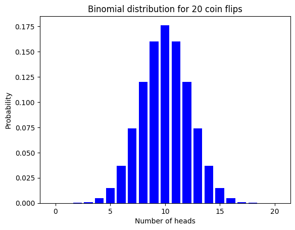

import numpy as np
import matplotlib.pyplot as plt
from matplotlib import animation, rc
import scipy
Excursus: Hypothesis testing#
Let us first revise the basic idea of hypothesis testing, the underlying concept of conformal prediction.
Assume you have been invited to a friends home and let a food delivery bring delicious food.
Let us call the friend B.
Both of you agree to have a coin decide which one has to pay the bill.
Yet only one coin toss would be unfair, B suggests to toss a coin 20 times.
The proportion of heads in the sequence would be the amount you have to pay of the bill and the proportion of tails is the amount your friend has to pay.
Because of modern days you do not have a coin with you and you have to take the coin of B.
Having a certain doubt B wants to only the the faith decide on the bill split you want to check whether he uses a fair coin.
With your basic knowledge in statistics you tackle this problem with hypothesis testing.
Firstly you formalize the problem. The assumption of a fair coin is your null hypothesis \(H_0: \theta = \frac{1}{2}\) and the alternative hypothesis \(H_1: \theta \neq \frac{1}{2}\). If B provides a fair coin the probability of having k heads in a sequence with 20 coin flips should follow the following distribution.
In the following we define the probability distribution for general sequence with N realizations.
def binomial_distribution(k, p, N=20):
# denote that this function works with both k being integer and k being an array of integers
binomial_coefficient = scipy.special.factorial(N) / (
scipy.special.factorial(k) * scipy.special.factorial(N - k)
)
return binomial_coefficient *( (p) ** k )* ((1 - p) ** (N - k))
Let us visualize this distibution for our 20 coin flips.
coin_flips = 20
head_amount = np.arange(0, coin_flips+1, 1)
probabilities = binomial_distribution(head_amount, 0.5, coin_flips)
Show code cell source
plt.bar(x=head_amount, height=probabilities, linewidth=0.7, color="blue")
plt.title(f"Binomial distribution for {coin_flips} coin flips")
plt.xlabel("Number of heads")
plt.ylabel("Probability")
plt.show()

But because we do not want to accuse our friend without statistically certainty, we want to have a guarantee that we only at most \(\epsilon\) probable falsely accuse him. Therefore we have a \(1-\epsilon\) ‘’certainty’’ that we correctly identify a biased coin. In statistics we denote this as rejecting the null hypothesis \(H_0\) with a significance niveau of \(\epsilon\). Therefore we choose a threshold \(r\) for the amount of heads such that
In the following we show this in an animation, where the red area depicts the probability in (8).
Show code cell source
fig,ax = plt.subplots()
coin_flips = 20
rc("animation", html="html5")
barcollection = ax.bar(x=head_amount,
height=probabilities,
linewidth=.7,
color="green")
def animate(number_of_heads):
probability_sum = 0
for i in range(coin_flips):
if i <= number_of_heads:
# the left first bars must be color changed
barcollection[i].set_color('r')
if i >= coin_flips - (number_of_heads):
barcollection[i].set_color('r')
probability_sum = sum(probabilities[:number_of_heads+1] + probabilities[coin_flips-number_of_heads:])
ax.set_title(f" A = {round(probability_sum,4)}, r = {number_of_heads},")
anim = animation.FuncAnimation(fig, animate, frames=coin_flips//2,interval=1000)
plt.close()
anim
---------------------------------------------------------------------------
RuntimeError Traceback (most recent call last)
File ~/Library/Python/3.9/lib/python/site-packages/IPython/core/formatters.py:342, in BaseFormatter.__call__(self, obj)
340 method = get_real_method(obj, self.print_method)
341 if method is not None:
--> 342 return method()
343 return None
344 else:
File ~/Library/Python/3.9/lib/python/site-packages/matplotlib/animation.py:1362, in Animation._repr_html_(self)
1360 fmt = mpl.rcParams['animation.html']
1361 if fmt == 'html5':
-> 1362 return self.to_html5_video()
1363 elif fmt == 'jshtml':
1364 return self.to_jshtml()
File ~/Library/Python/3.9/lib/python/site-packages/matplotlib/animation.py:1285, in Animation.to_html5_video(self, embed_limit)
1282 path = Path(tmpdir, "temp.m4v")
1283 # We create a writer manually so that we can get the
1284 # appropriate size for the tag
-> 1285 Writer = writers[mpl.rcParams['animation.writer']]
1286 writer = Writer(codec='h264',
1287 bitrate=mpl.rcParams['animation.bitrate'],
1288 fps=1000. / self._interval)
1289 self.save(str(path), writer=writer)
File ~/Library/Python/3.9/lib/python/site-packages/matplotlib/animation.py:148, in MovieWriterRegistry.__getitem__(self, name)
146 if self.is_available(name):
147 return self._registered[name]
--> 148 raise RuntimeError(f"Requested MovieWriter ({name}) not available")
RuntimeError: Requested MovieWriter (ffmpeg) not available
<matplotlib.animation.FuncAnimation at 0x10f42c580>
If we would then want to have a significance of \(\epsilon\) = 5% we would have r = 5.
Note
Nothing can be concluded if we do not reject the null hypothesis. For example with \(\epsilon\) = 1% and r = 5, then \(A > \epsilon\) so that we can not reject the null hypothesis. In particular this does not imply that \(H_0\) is accepted.